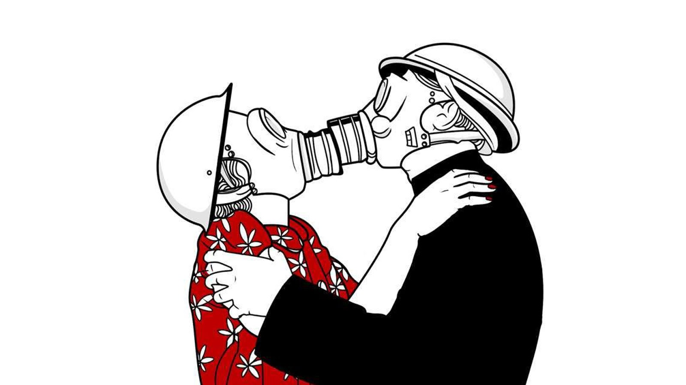

Relaciones y sus Implicaciones
Los seres humanos necesitamos relacionarnos.Las relaciones nos nutren en muchos sentidos,entablar lazos o relaciones con las personas que nos rodean, para poder expresarnos y sentirnos bien con nosotros mismos, tener ese apoyo que representan nuestros amigos o pareja es fundamental para nuestra salud.Darnos el tiempo para conocer y tomarle aprecio a quienes nos rodean es un proceso fundamental en nuestra vida, porque no solo conoces a mas personas si no que no ademas te conoces mejor a ti mismo.
Signos de una Relacion toxica
Relaciones Sanas
Una relacion tiene sentido como un vinculo de ayuda mutua, se basa en el respeto y la igualdad y ofrece muchas satisfacciones,produce bienestar y sirve como apoyo,dandose ademas como una oportunidad para madurar y crecer como persona. No debe ser una carga que nos atormenta y hace sufrir cada vez que debemos estar con alguien. Tanto hombres como mujeres debemos dejar atrás el pensamiento de que los celos enfermizos son una forma de demostrar el amor, cuando las verdaderas muestras amorosas son querernos a nosotros mismos para así proyectar seguridad y respeto en nuestra relación.

Relaciones Toxicas
Una relacion o vinculo con alguien debe hacernos sentir bien y comodos con nosotros mismos, para poder reflejar estas sensaciones en la otra persona .Cuando dentro de una relacion no hay confianza respeto o apoyo, hay algo que esta mal. Una relacion no se debe sentir un encadenamiento o opresion por parte de alguien, nadie esta en el derecho de controlar de manera negativa las decisiones que se quieren tomar por cuenta propia, ni mucho menos sufrir de algun tipo de violencia fisica o psicologica, esto da pie a que se formen "relaciones" basadas en la dependencia, el conformismo y la posesión.
